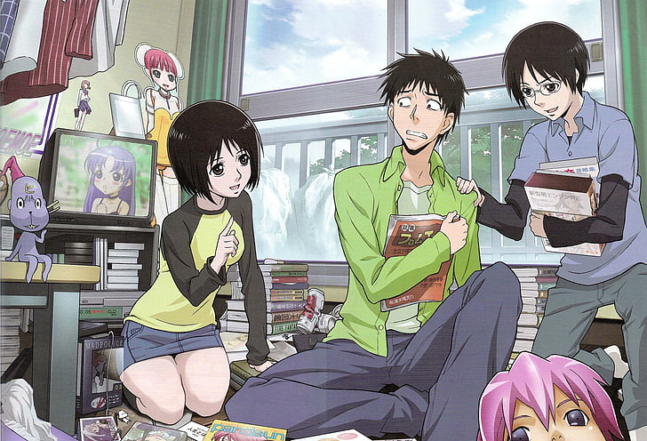
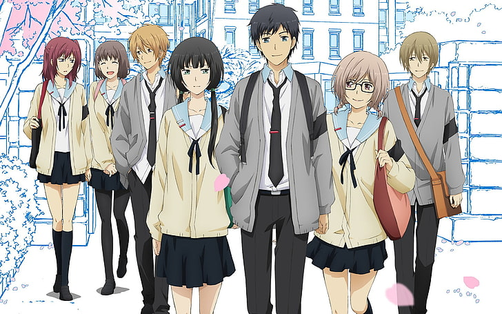
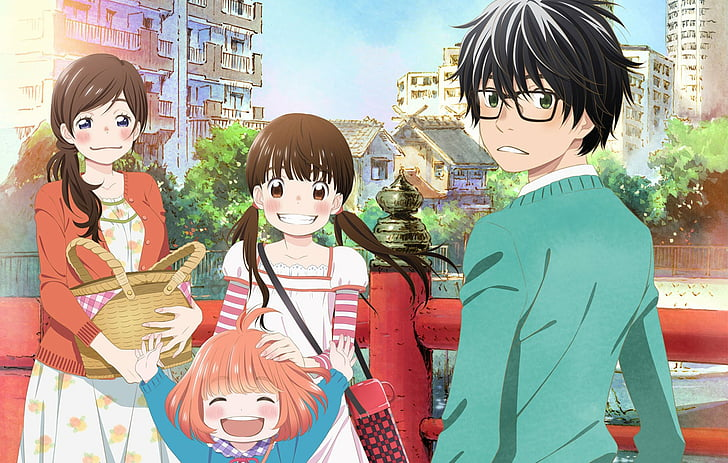
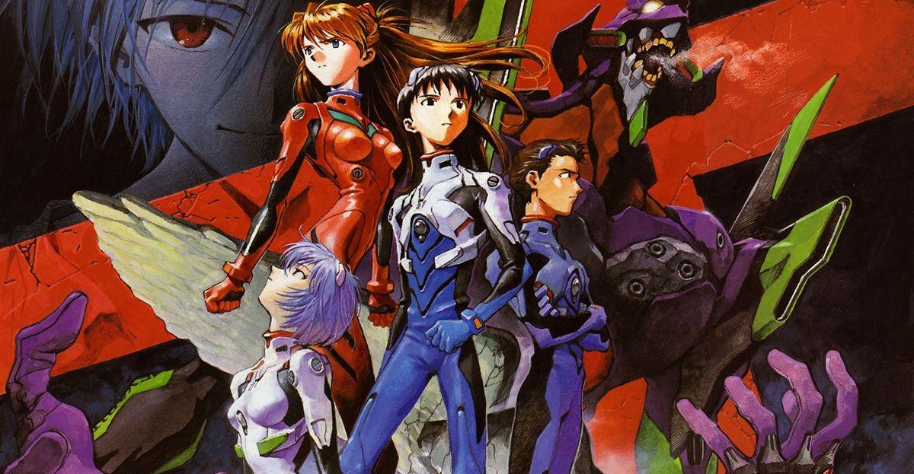

Top psychological anime to explore life's challenges
If you're looking for anime that delve into life's challenges, growth,
and self-discovery, there are several titles that beautifully explore
these themes. From dealing with mental health struggles to reflecting on
second chances, these shows offer deep emotional experiences. Whether
you’re seeking solace or a journey of transformation, these anime
provide powerful narratives that resonate with personal introspection
and healing
Welcome to the NHK

A psychological drama exploring themes of isolation, depression,
and societal expectations, following the life of a young man
struggling with hikikomori tendencies (A mental health anime of a
man battling depression and loneliness). NHK in full is (Nihon
Hikikomori Kyokai);
RELIFE

Focusing on a 27-year-old man given a chance to relive his high
school years as part of an experiment to change his life. It’s a
story of second chances, growth, and self-discovery.
March Comes in Like a Lion

A heartfelt drama about a young professional Shogi player dealing
with personal trauma, growth, and relationships. It beautifully
portrays mental health struggles and healing.
To Your Eternity
An emotional journey of an immortal being learning about humanity
through interactions with different people and experiences.
Neon Genesis Evangelion

A complex psychological and mecha series exploring existential
themes, trauma, and the human condition, centered around teenagers
piloting giant robots to save humanity.